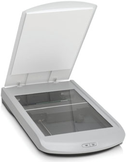
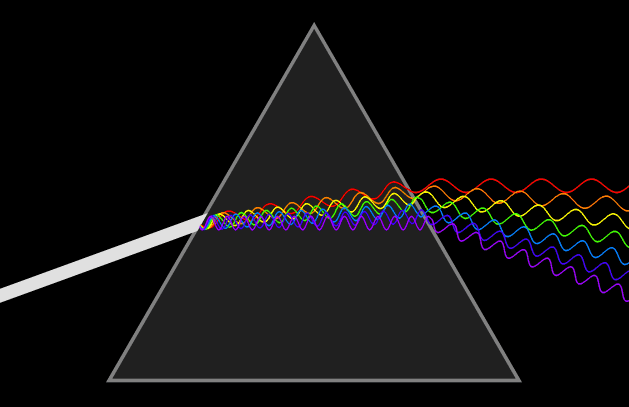
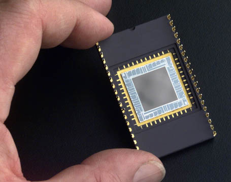
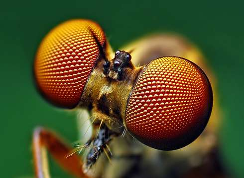
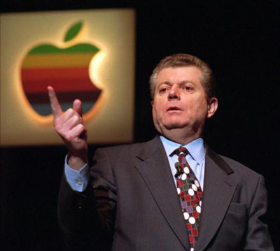
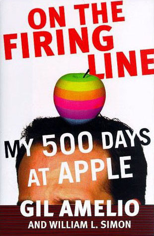
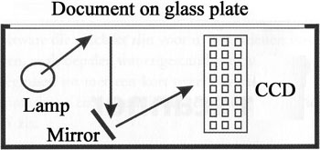
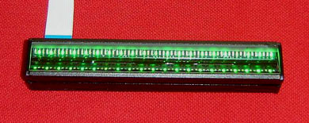
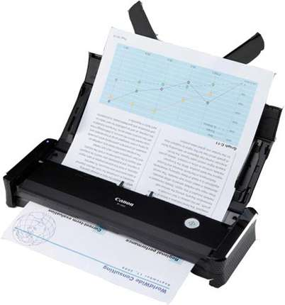
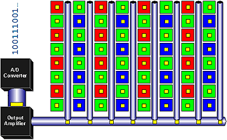

As is the case with printing, it takes a special piece of hardware to get the job done — a scanner. An image scanner is an electronic input device designed to digitize images: it converts a physical document into an electronic file the computer can handle.

Just as a human brain only recognizes things that are visually observed, the computer can only read documents when it disposes of their image. Well, the scanner is the computer peripheral that generates that image and sends it to the computer. The scanner is the computer’s eye!
When human beings or animals observe something, light waves (“photons”) fall on the retina inside their eyes. Photons are gradually fluctuating waves or “analogue” data. Computers speak a different language: the digital language of 1s and 0s.

A scanner converts physical pictures into bitmapped graphics — image files — that can be processed by a computer. A scanner “sweeps” the document from left to right, from top to bottom to create a picture of it. Scanners divide a document up in a grid of pixels and record pixel by pixel what the sensor sees.
Two types of light-sensitive sensors, CCDs and CIS, are used in scanners. A CCD or “charge-coupled device” is a small semiconductor chip that contains an array of tiny light-sensitive photocells. (A 600 dpi scanner has something like 5,100 sensors in each horizontal row.) A CCD makes you think of the compound eye of an insect.
 
(Gil Amelio, former CEO of National Semiconductor (acquired by Texas Instruments in 2011) and Apple (before the second coming of Steve Jobs), was one of the co-inventors of the CCD in the early 70s!)
 
As a lamp illuminates the document to be scanned, the CCD is moved across the page to scan it. An optical system using lamps, lenses, prisms and mirrors transports the image to the light-sensitive chip.

A CIS, short for “Contact Image Sensor”, doesn’t require an optical system. A full row of sensors is placed very close to the document (and can employ banks of small LEDs instead of a light bulb to illuminate the scanned document). CIS-based scanners are thinner and smaller — and cheaper to produce. CCD-based scanners provide better image quality and more detail.
 
The output of the sensors is sent to the scanner’s “A/D converter” (“analogue-to-digital converter”) that “translates” the light waves (analogue colors) into electrical impulses (digital data) — 1s and 0s that get transmitted to the computer as the scanned image file.

Arguably, no two scanner models generate the exact same image. Such differences are inevitable because they are caused by the scanner’s CCD or CIS, its mirrors, its scanning lamp or LEDs (in the case of Canon LIDE scanners) etc. Scanners differ in size, quality, price, you name it. (You can think of scanner benchmarks in computer magazines, where a nice color image is scanned with many different scanners. Afterwards, the images are printed with a single color printer to detect the differences in the color tones. One scanner generates images that are darker or sharper than other models, another scanner has too much yellow in the images etc.)